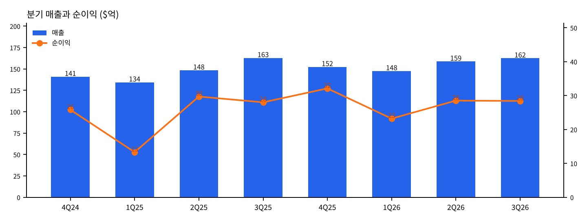
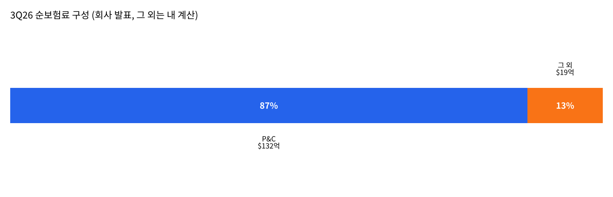
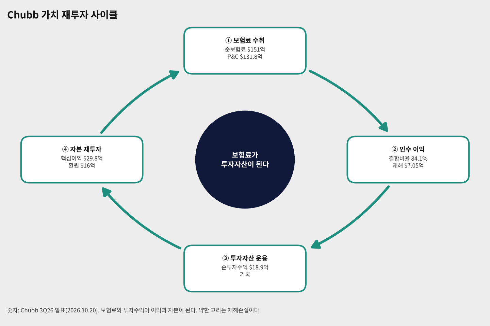

Chubb는 보험료를 받아 보험금을 주고, 남은 돈을 투자해 이익을 만든다. 손해율과 투자수익이 함께 이익을 좌우한다.
| 항목 | 내용 |
|---|---|
| 종목 | Chubb (CB) · NYSE · 금융(손해보험) · 스위스 취리히 |
| 최근 분기(3Q26) | 순보험료 $151억, 핵심 EPS $7.66 |
| 핵심 사업 | 북미 상업·개인 P&C, 해외 일반, 생명 |
| 직원 수 | 약 45,000명(트레이딩뷰) |
| 멀티플 | PER·PEG·P/S는 08~10 항목 표 참조 |
| 직책 | 인물 | 역할·특징 |
|---|---|---|
| 회장·CEO | 에반 그린버그(Evan Greenberg) | CEO |
| CFO | (확인 필요) | 회사 공개 자료 기준 확인 필요 |
경영 스타일: 보험 인수 규율. 가격이 낮으면 보험료를 늘리지 않는 방식이다.
결합비율 84%대를 유지하는 보험 심사가 경쟁력이다.
해외 일반 +6.7%, 해외 생명 +15.7%로 성장 축을 넓힌다.
다음 실적발표는 세 가지 질문에 답하는 자리다.
1. 재해손실이 평년 수준으로 돌아오나?
2. 북미 상업 보험료가 되살아나나?
3. 투자수익이 기록을 이어가나?
한 줄 판정 규칙: 첫 질문(재해손실)이 평년으로 돌아오면 약한 고리(결합비율 악화)가 풀린다.
일정: 4Q26 실적은 2027.02.02 발표 예정이다.
| 분기 | 매출 | 순이익 | EPS | 조정 EPS | 특이 사항 |
|---|---|---|---|---|---|
| 4Q24 | $140.8억 | $25.8억 | 6.33 | 6.02 | |
| 1Q25 | $134.3억 | $13.3억 | 3.29 | 3.68 | |
| 2Q25 | $148.4억 | $29.7억 | 7.35 | 6.14 | |
| 3Q25 | $162.8억 | $28.0억 | 6.99 | 7.49 | |
| 4Q25 | $152.3억 | $32.1억 | 8.10 | 7.52 | |
| 1Q26 | $147.5억 | $23.2억 | 5.88 | 6.82 | |
| 2Q26 | $158.7억 | $28.5억 | 7.29 | 7.26 | |
| 3Q26 | $162.4억 | $28.4억 | 7.30 | 7.66 | 재해손실 $7.05억, 핵심이익 -2.2% |
매출은 트레이딩뷰 스캐너의 분기 총매출이라 회사가 발표한 순매출과 다를 수 있다. 스캐너 매출은 총수익 기준이라 회사의 순보험료와 다르다. 매출·순이익·EPS(GAAP 희석)는 트레이딩뷰 스캐너, 조정 EPS는 트레이딩뷰 실적 페이지의 Reported 값이다. 분기 정렬은 오래된 분기→최신이다.

흐름 요약: 최근 분기 매출은 $162.4억로 전년 동기 $162.8억 대비 -0.2%, 순이익은 $28.4억(전년 $28.0억)다. 최근 4분기 GAAP EPS는 $28.57, 조정 EPS는 $29.26다.
| 항목 | 내용 | 3Q26 순보험료 | 비고 |
|---|---|---|---|
| P&C 보험 | 손해보험 | $131.8억 | 결합비율 84.1% |
| 그 외(내 계산) | 생명 등 | $19.2억 | 총 $151억에서 P&C를 뺀 값 |

순보험료의 87%가 P&C다.
Chubb는 위험을 인수해 고객의 손실을 보상하는 것을 목표로 한다.
| 축 | 내용 |
|---|---|
| 보험료 | 순보험료 $151억 |
| 투자 | 순투자수익 $18.9억 |
| 환원 | 분기 $16억 |

| 이동평균 | 값 | 종가 대비 | 위치 |
|---|---|---|---|
| 5일선 | $375.09 | -1.1% | 종가 아래 |
| 20일선 | $366.93 | +1.1% | 종가 위 |
| 50일선 | $351.16 | +5.7% | 종가 위 |
| 100일선 | $349.44 | +6.2% | 종가 위 |
| 200일선 | $338.37 | +9.6% | 종가 위 |
52주 고가 $384.26(2026-11-05)·저가 $291.03(2025-12-02) 범위에서 종가 $371.02는 20일선, 50일선, 100일선, 200일선을 웃돌고 5일선은 밑돈다.
| 규칙 | 기준 | 현재 값 | 신호 |
|---|---|---|---|
| 장기 추세 필터 | 종가 vs 200일선 | $371.02 > $338.37 | 매수 |
| 중장기 교차 | 50일선 vs 200일선 | $351.16 > $338.37 | 매수 |
| 단기 교차 | 20일선 vs 50일선 | $366.93 > $351.16 | 매수 |
| 돈키언 채널 | 55일 고가 $384.26 / 저가 $325.00 | 중간값 $354.63 위 | 매수 |
| 1개월 모멘텀 | 21거래일 수익률 | +3.7% (기준 $357.75) | 매수 |
| 3개월 모멘텀 | 63거래일 수익률 | +8.2% (기준 $342.87) | 매수 |
| 6개월 모멘텀 | 126거래일 수익률 | +13.0% (기준 $328.38) | 매수 |
| 12개월 모멘텀 | 252거래일 수익률 | +25.5% (기준 $295.58) | 매수 |
| 종합 (8개 평균) | +1.00 | 강한 매수 |
해석: 매수 신호 8개(장기 추세 필터, 중장기 교차, 단기 교차, 돈키언 채널, 1개월 모멘텀, 3개월 모멘텀, 6개월 모멘텀, 12개월 모멘텀), 매도 신호 0개(없음). CTA 점수 +1.00(강한 매수). 14일 ATR $7.12 (1.9%), 52주 고가 $384.26 · 저가 $291.03.
| 가격 | 기준 | 무엇이 바뀌나 |
|---|---|---|
| $384.26 | 55일 고가 | 돌파 시 채널 상단 갱신 |
| $357.75 | 1개월 모멘텀 기준가 | 종가가 이 가격 위면 1개월 신호 매수 |
| $354.63 | 돈키언 중간값 | 55일 채널 중간값 위/아래로 신호가 바뀜 |
| $342.87 | 3개월 모멘텀 기준가 | 종가가 이 가격 위면 3개월 신호 매수 |
| $338.37 | 200일선 | 종가가 이 선 위/아래인지로 장기 추세 신호가 바뀜 |
| $328.38 | 6개월 모멘텀 기준가 | 종가가 이 가격 위면 6개월 신호 매수 |
| $325.00 | 55일 저가 | 이탈 시 채널 하단 갱신 |
| $295.58 | 12개월 모멘텀 기준가 | 종가가 이 가격 위면 12개월 신호 매수 |
가격 수준은 신호가 바뀌는 기준선일 뿐 진입·청산 가격 제안이 아니다. 20일/50일 교차는 이동평균 자체가 움직여 단일 가격으로 표시하지 않았다. 일봉·주봉은 종가 기준 직접 계산(고저 데이터 미사용)이다.
| 악재 요인 | 내용 | 강도 |
|---|---|---|
| 재해손실 | 3Q 재해손실이 전년의 2.5배 | 높음 |
| 북미 상업 둔화 | 북미 상업 P&C -2.7% | 중간 |
| 정의 변경 | 핵심영업이익 정의 변경으로 비교에 주의 | 참고 |
| 티커 | 회사 | PER(TTM) | PEG | P/S | EPS 성장(YoY) |
|---|---|---|---|---|---|
| CB | Chubb | 13.0배 | 0.67 | 2.28배 | +19% |
| TRV | Travelers | 10.3배 | 0.21 | 1.71배 | +50% |
| PGR | Progressive | 11.5배 | 1.34 | 1.49배 | +9% |
| AIG | AIG | 13.2배 | 1.34 | 1.55배 | +10% |
| ALL | Allstate | 6.0배 | 0.14 | 0.98배 | +43% |
비교 결론: Chubb의 PER 13.0배는 Travelers·Allstate·Progressive보다 높고 AIG보다 낮다. PEG 0.67는 Travelers·Allstate보다 높고 AIG·Progressive보다 낮다.
현금·부채는 트레이딩뷰 스캐너 값이다. 보험사라 충당금이 크다.
| 지표 | 값 | 출처 | 해석 |
|---|---|---|---|
| 현금·단기투자 | – | 트레이딩뷰 스캐너(최근 분기) | |
| 총부채 | $236억 | 트레이딩뷰 스캐너(최근 분기) | |
| 순부채(부채−현금) | – | 내 계산 | 현금 대비 부채 부담 |
| 잉여현금흐름(TTM) | $196억 | 트레이딩뷰 스캐너 | |
| TTM 매출 | $621억 | 트레이딩뷰 스캐너 |
| 기준 | 매출 | P/S | 비고 |
|---|---|---|---|
| 내 계산(종가 ÷ 최근 4분기 매출 합계) | $620.9억 | 2.28배 | 시총은 정렬용 데이터에서만 사용 |
| 동종(트레이딩뷰) | – | TRV 1.71배 · PGR 1.49배 · AIG 1.55배 · ALL 0.98배 | 11.19 |
해석: 보험금 지급을 위한 투자자산이 크다(내 해석).
EBITDA는 영업활동의 현금 창출력을 보는 지표이고, PEG는 PER을 EPS 성장률로 나눈 값이다. EBITDA·FCF는 트레이딩뷰 TTM 값이다.
| 지표 | 값 | 산출 |
|---|---|---|
| EBITDA(TTM) | – | 은행·증권사는 EBITDA를 산출하지 않아 생략 |
| EBITDA 마진 | – | EBITDA ÷ TTM 매출(내 계산) |
| FCF 마진 | 31.6% | FCF ÷ TTM 매출(내 계산) |
| PER(GAAP TTM) | 13.0배 | $371.02 ÷ $28.57 |
| PER(조정 TTM) | 12.7배 | $371.02 ÷ $29.26 |
| 방식 | PER | EPS 성장률 | PEG | 판정 |
|---|---|---|---|---|
| GAAP EPS (TTM $28.57) | 13.0배 | +19% ($23.96 → $28.57) | 0.67 | 투자 적격 |
| 조정 EPS (TTM $29.26) | 12.7배 | +25% ($23.33 → $29.26) | 0.50 | 적극 매수 |
판정: GAAP EPS 기준 PEG 0.67 → 1.0 이하(투자 적격) PEG 기준은 1.0 이하 투자 적격, 0.5 이하 적극 매수다. EPS 성장률은 최근 4분기 EPS 합계를 직전 4분기 합계와 비교한 값(내 계산)이고, 일회성 항목이 있으면 조정 EPS 행을 함께 본다.

Chubb의 사이클: 보험료가 투자자산을 키우고 이익이 자본을 쌓아 새 위험 인수를 늘린다.
| 고리 | 현재 숫자·근거 |
|---|---|
| ① 보험료 수취 | 순보험료 $151억(+1.9%) · P&C $131.8억 |
| ② 인수 이익 | P&C 결합비율 84.1% · 재해손실 $7.05억 |
| ③ 투자자산 운용 | 조정 순투자수익 $18.9억(기록) |
| ④ 자본 재투자 | 핵심영업이익 $29.8억 · 주주환원 $16억 |
사이클의 특징: 약한 고리는 재해손실이다. "(내 해석)"은 보고서 수치가 아닌 해석이다.